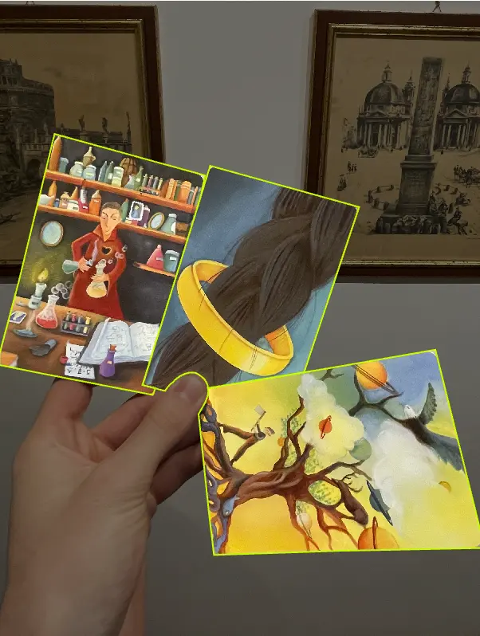
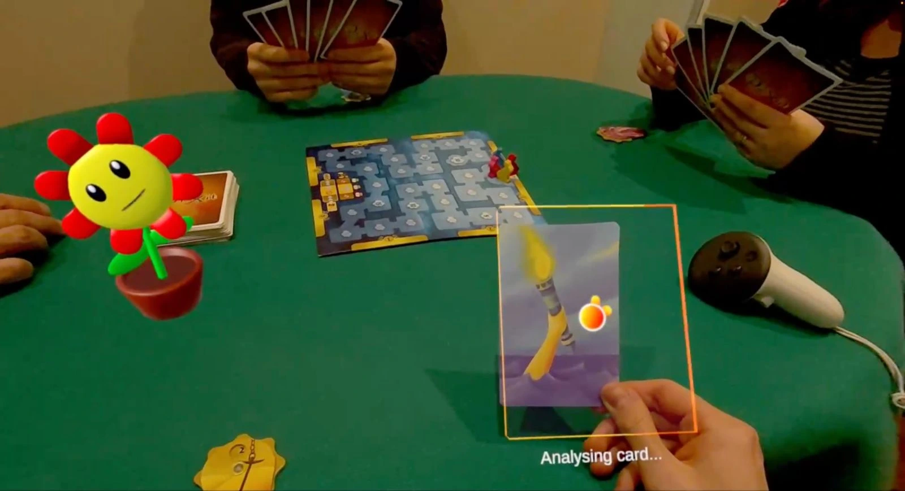
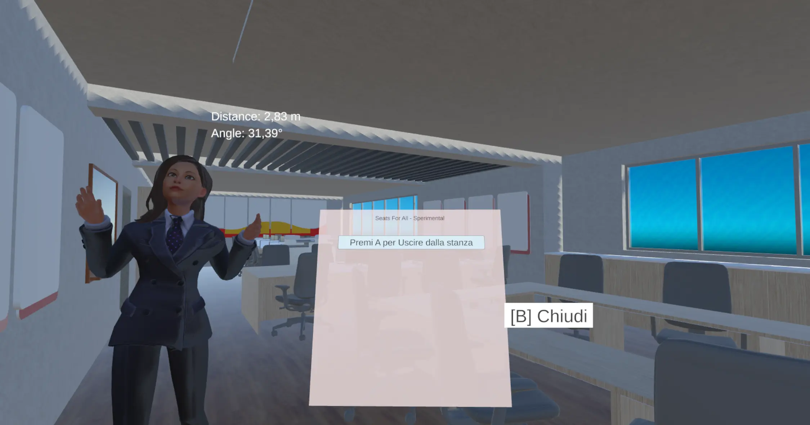
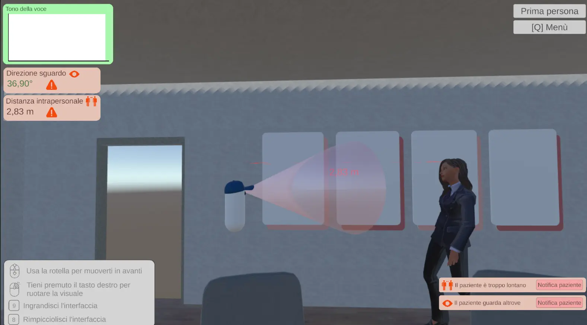
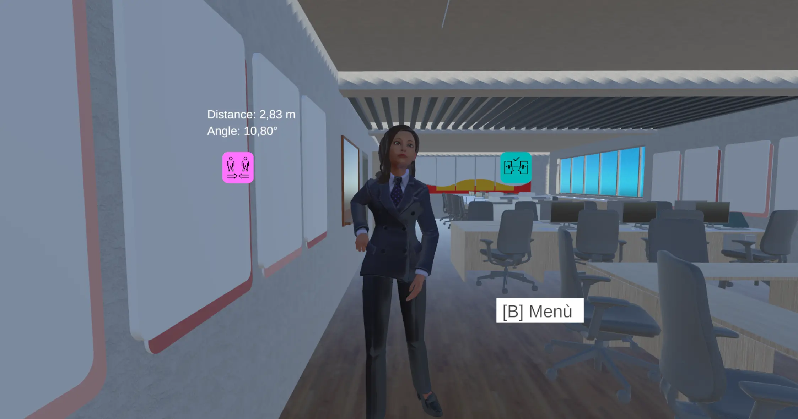

Unity
Unity
Seats For All
Playing is for everyone
- Role
- Programmer, Prompt Designer
- Team
- 2 developers, 1 designer
- Prototype
- Oct 2025 to Jan 2026
- Thesis
- Apr 2026 to Dec 2026
- Platform
- Meta Quest, PC
Gallery


Overview
Seats For All is a mixed reality app for the Meta Quest 3 with the intent to help children with neurodevelopmental disorders play a board game with the other kids at the table. While the potential applications of the technology are vast, given the time constraints of the course, I decided to build the prototype around Dixit, a game where everyone looks at a hand of illustrated cards and makes up a clue for the one they picked.
Dixit is great for imagination and storytelling, and it also asks for a lot: following multi-step instructions, waiting through other people's turns, picking up on what's expected without being told, and dealing with outcomes that aren't clearly right or wrong. For a neurodivergent child all of that piles up until playing costs more than it gives, and they drop out of the game. Usually an adult ends up sitting at the table translating the rules for them.
The answer was Seats, a little flower in a pot who gets placed on the table next to the board and guides the child through the phases of the game, answering whatever they ask whenever they ask it. The whole project runs hands-free through the child's voice and the headset's cameras, so their hands stay free for the cards and for the kids they're playing with.
I was responsible for the real-time agent, the card descriptor, the VR setup, the audio streaming, the game state logic and the stabilization of the detection.
Teaching a headset to read cards
Many models exist for card detection, but none of them were suitable for a case this complex. Dixit cards are flat illustrations, so it'd be the same as building a model to recognize paintings! So the only solution was to photograph the dataset by hand and annotate it on Roboflow before training YOLOv8n. The first model finds the board when the app launches, which is how Seats gets placed in the right spot on the table, and then it gets switched off. The second one finds Dixit cards near the player.

With the model, I now needed to deploy it so that those weights could run inside Unity on the headset. Frames come off the Quest's passthrough camera and get cropped square by a shader before they reach the detector. Every capture still builds a brand new texture, which causes lag spikes bad enough to be uncomfortable in a headset, so reusing a single texture between captures is the first thing I'd work on in the future.
Getting the card into 3D uses the headset's depth sensors. A ray is cast from the camera to the center of the card, and the four edges let the app rebuild its pose in space from the known size of a Dixit card. Raw detections jump around far too much to put a marker on, so the result goes through a Kalman filter over the last 30 detections, with interpolation and outlier rejection on top. Once it's steady a 3D outline is drawn around the card, so the child knows the app has found it.

The capture averages the bounding boxes of those same 30 detections, pads them by 15% so nothing gets cut off, and crops the card out in GPU memory. That crop becomes a 256x256 JPEG at 70% quality before it goes anywhere, purely because image tokens on Azure are... expensive. What comes back from GPT-4o is a JSON object saying whether it's a Dixit card at all, whether it matches one the child already has in hand, and if it's new, a couple of sentences about its imagery and its mood. The model gets written descriptions of the cards in hand rather than the images themselves. Image tokens again.
Update: the project became a thesis
The course ended in January, and the idea ended up becoming my thesis, which I've been building since April and will finish in December. I decided to pivot away from a system that would need to be rebuilt for every new application, and focused instead on a more versatile one that sits next to someone and helps them through a situation that is harder for them than it is for everybody else.
This time the target users are adults with Asperger syndrome, who usually have no cognitive impairment at all, but still find social interaction difficult enough that it leads to isolation and anxiety, and the therapies that work for other people are hard to transfer onto them. The few VR systems built for this before trained one narrow skill at a time, like getting through a job interview, so I went after general conversation instead.
The patient puts on the headset and finds themselves somewhere with somebody to talk to, a colleague in an office, a barista behind the counter, a professor after her lesson, and they have to hold the conversation out loud. The person they're talking to is an LLM, and their therapist is observing the interaction from a desktop on the other side. The whole project is built off requirements gathered from therapists and prospective patients through interviews and questionnaires.


Telling the patient how they're doing
The patient finds out how they're doing through small colored elements that appear in their view and fade after a few seconds. The application produces the positive reinforcements on its own, either when a parameter goes back to a correct value after being wrong, or when it has stayed correct long enough to be worth rewarding. The negative ones never appear by themselves. The patient is told that something is wrong only when the therapist decides they should be told. I took this approach on the advice of the therapists themselves, to reinforce positive actions more than to punish negative ones.
Each one carries its message in full the first time and only its icon afterwards, since the patient has already read it once and reading it again takes attention away from the conversation. The ones about distance and gaze also get checked when they arrive and thrown away if the patient has already corrected themselves, because a few seconds pass between the therapist seeing the problem and pressing the button, and being told to move closer when you have already done it would only confuse them.

A multiparty conversation
The conversation between patient, interlocutor and therapist was integrated using two real-time LLM agents, one that would listen to the conversation and deduce whether the party was talking to it or if they were talking among themselves, and the other that would actually reply to the patient and was context-aware for the conversation.
This remains to this day the most complex part of the project, and it is still being improved upon. Testing has revealed that in some instances the multiparty conversation is unreliable, and even distressing to some users since the agent can misinterpret when it is being talked to and talk over either the patient or the therapist. I'm considering improving reliability and latency of the agent by returning to a single agent, with a one-on-one conversation with the patient, and providing the therapist with interface controls to pause the interactions and intervene when necessary.
Back to projects